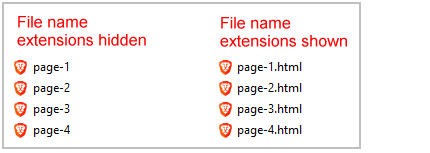
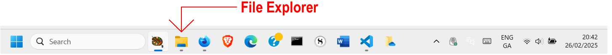
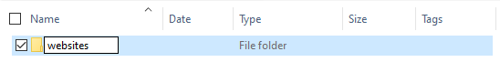
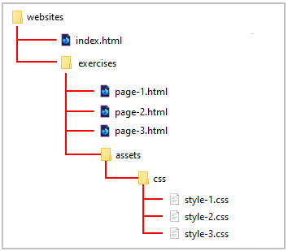

Learning Goals
At the end of this Tutorial, you will be able to:
- View the full names of files in File Explorer of Microsoft Windows 10 and 11.
- Create a logical folder structure for the various files typically used in software projects.
Viewing the full names of files in Windows
You will find it easier to work with the various types of files you will meet in web development when you can see the full name of each file.
By default, the Finder on Apple Macs shows the name of every file in full.
Microsoft Windows, however, hides the second part of file names, known as the file name extension.
Follow the steps below to view file name extensions in Windows 11.
- Open File Explorer by clicking its icon on the Taskbar along the bottom of the screen. 
- Click the View menu and then the Show command.
- From the sub-menu now displayed, select the File name extensions option.

And here are the steps for Windows 10:
- Open File Explorer.
- In the menu at the top of the screen, click the View option.

- You are now shown a new ribbon of options. Check the box named File name extensions.

✅ In future, all files will shown with their full file name that includes the file name extension.
Creating your folder structure
Before creating any web pages, it’s a good idea to create a location on your computer to store them.
Working with web pages is very different to working with Microsoft Word or Adobe Photoshop. With those apps, you are typically working with only a single file at any one time.
In contrast, web pages can contain lots of files. There is the web page itself (an HTML file), one or more stylesheets (CSS files), several images (JPG or PNG files) and maybe some JavaScript code (JS files) and videos (MP4 files) as well.
That’s a lot of files to keep track of!
Moreover, any one website will commonly contain multiple web pages, and each of these will have its own list of images and other files.
Creating your ‘main’ folder
Your first step is to create a 📁 folder on your computer to store all your web design work – all your files and sub-folders. You can think of this as your ‘main’ or ‘high-level’ folder.
For Microsoft Windows users, here are the steps:
- Open File Explorer.
- In the left-hand column, click either on Documents or your C: drive.

- On the next screen displayed, in the blank space at the right side, right-click and choose New | New folder from the context menu.

- Give your new folder a name. For example, websites.


DO NOT type upper-case letters. Type websites.
DO NOT type 'Websites' or 'WEBSITES'.
DO NOT type blank spaces such as 'web sites'.
✅ That’s it. In future, you will never need to wonder where your web-related files are located on your computer – they will always be in your 📁 websites folder.
Creating your ‘exercises’ sub-folder
Creating your ‘main’ 📁 websites folder is only a first step. You will be working with many dozens of files in this course. To keep your files organised, you will be creating a number of sub-folders. And many of these will, in turn, contain sub-folders of their own.
Follow these steps to create a sub-folder to store the exercise files you will work with in this and the next few Tutorials.
- In Windows, open File Explorer.
- Select and display your 📁 websites folder.
- In the blank space at the right side, right-click and choose New | New folder from the context menu.
- Give your new sub-folder this name:
exercises
DO NOT type upper-case letters. Type exercises.
DO NOT type 'Exercises' or 'EXERCISES'.
✅ All done. Your folder and sub-folder structure should now look as shown below.
✅ Another task completed. You are now ready to create your first web pages.